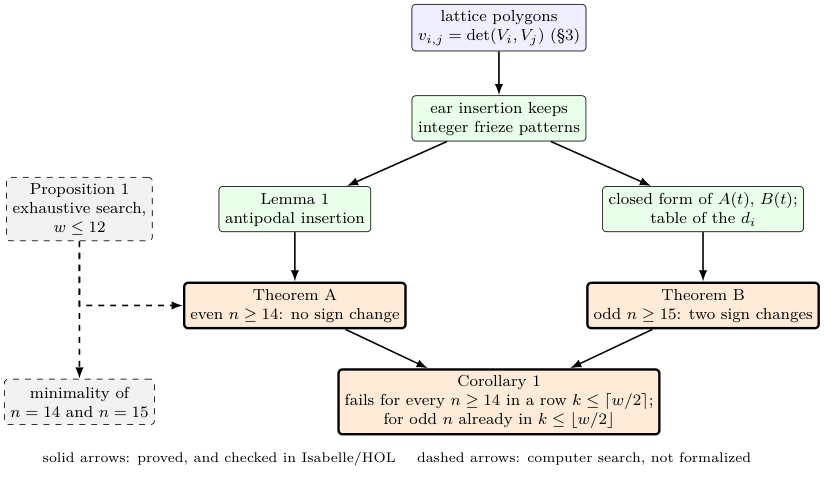
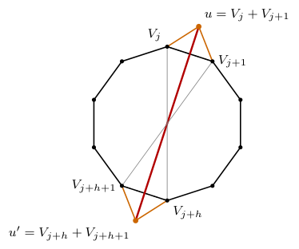
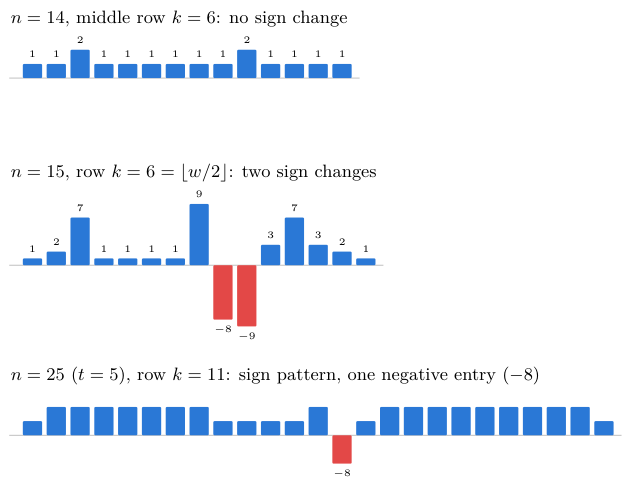
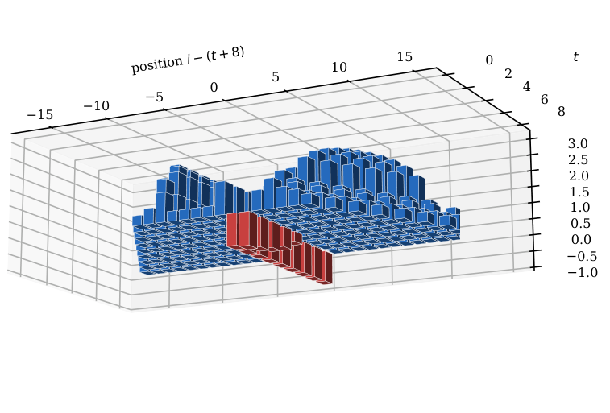

Integer frieze patterns and Tabachnikov’s four sign changes
At a glance
What the paper contributes
A negative answer to Problem 1 of Tabachnikov (A four-vertex theorem for frieze patterns?, 2018) for frieze patterns of positive integers, which the question left open:
- for every even $n \geq 14$, two integer frieze patterns whose middle rows are strictly ordered (no sign change);
- for every odd $n \geq 15$, two whose rows $\lfloor w/2 \rfloor$ differ with no zero and exactly two sign changes, inside the range $1 \le k \le [w/2]$ of the question;
- an exhaustive search showing that $14$ and $15$ are the smallest values of $n$ for the two phenomena, when zeros may count as sign changes.
Both families are proved for every $n$ and checked in Isabelle/HOL; the two smallest pairs are also checked in Lean.
🚀 Start here: Lemma 1: antipodal ear insertion keeps the old diameters, adds one.
Main results:
- Theorem A: even n ≥ 14: middle rows strictly ordered, no sign change
- Theorem B: odd n ≥ 15: row ⌊w/2⌋, no zero, exactly two sign changes
🗺️ Map of the results (click a box to go to it)
Dependencies in the written proof: an arrow A → B means that this proof of B uses A. Every result rests on its written proof; the tags record what was checked besides, and each statement's “Evidence & scope” block says how far. The colour of a box is its strongest tag, in the order above; the tags in the box give the rest. Boxes with a thick border are the main results; click a box to read the statement.
📐 Setting (copied from the paper, §1)
A frieze pattern of width \(w\) is an array of \(w\) bi-infinite rows of numbers, each offset by half a step from the previous one, bordered above and below by a row of \(1\)s and a row of \(0\)s, in which every elementary diamond satisfies \(ad - bc = 1\). Put \(n = w + 3\). … write \(v_{i,j}\) for the entries, with \(a_i = v_{i-1,i+1}\), so that row \(k\) consists of the entries \(v_{i,i+k+1}\), \(i \in \mathbb {Z}\); it is \(n\)-periodic, and by the glide symmetry \(v_{i,j} = v_{j,i+n}\) rows \(k\) and \(w + 1 - k\) carry the same values. Given two frieze patterns \(u\) and \(v\) of the same width, Tabachnikov considers the cyclic sequence \(d_i = v_{i,i+k+1} - u_{i,i+k+1}\) …
(§1, Zeros.) We use three readings of the number of sign changes of a non-zero cyclic sequence \(d\): \(s^-(d)\), the sign changes after deleting the zeros; \(s^+(d)\), the largest number of sign changes obtainable by giving signs to the zeros; and \(E(d) = \# \{ i : d_i d_{i+1} \leq 0\} \). One has \(s^- \leq s^+ \leq E\), and all three agree when \(d\) has no zero.
(§3) A frieze pattern of width \(w = n - 3\) with positive entries is the same as a sequence of vectors \(V_0, V_1, \dots , V_{n-1} \in \mathbb {R}^2\), up to \(\mathrm{SL}(2,\mathbb {R})\), with \(\det (V_i, V_{i+1}) = 1\), \(\det (V_0, V_{n-1}) = 1\) and \(\det (V_i, V_j) {\gt} 0\) for \(0 \leq i {\lt} j {\lt} n\); extended by \(V_{i+n} = -V_i\), the entries are \(v_{i,j} = \det (V_i, V_j)\). The quiddity is \(a_i = \det (V_{i-1}, V_{i+1})\), and \(V_{i+1} = a_i V_i - V_{i-1}\).
1 The question
No numbered statement in this section.
It is prose only (no statement, figure or table): read it in the paper (PDF).
2 Results
For every even \(n \geq 14\) there are two integer frieze patterns of width \(n - 3\) whose middle rows (\(k = n/2 - 1\), the diameters of the \(n\)-gon) are strictly ordered: \(d_i {\gt} 0\) for all \(i\).
Lean · ours, in partshow
the base pair n = 14 only (kernel computation, decide); the family for every n is in Isabelle
Isabelle · oursshow
strictly_ordered_middle_rows · Isabelle/AFP/Integer_Frieze_Rows/Integer_Frieze_Rows.thy, line 488 — the theorem for every t (n = 14 + 2t), in the lattice-polygon model
theorem strictly_ordered_middle_rows: "frieze (FA t) \<and> frieze (FB t) \<and> length (FA t) = 14 + 2 * t \<and> length (FB t) = 14 + 2 * t \<and> (\<forall>i < 7 + t. dia (FA t) i < dia (FB t) i)"
strictly_ordered_middle_rows_continuants · Isabelle/AFP/Integer_Frieze_Rows/Integer_Frieze_Rows.thy, line 528 — the same, stated with continuants of the quiddity
corollary strictly_ordered_middle_rows_continuants: "\<forall>i < 7 + t. K (map (quid (FA t)) [Suc i..<i + (7 + t)]) < K (map (quid (FB t)) [Suc i..<i + (7 + t)])"
exists_strictly_ordered_middle_rows · Isabelle/FriezeDominance/Frieze_Dominance.thy, line 50 — the base pair n = 14, as quiddities, by evaluation
theorem exists_strictly_ordered_middle_rows:
"\<exists>a b. is_quiddity a \<and> is_quiddity b \<and> length a = 14 \<and> length b = 14 \<and>
(\<forall>i < 14. entry a 6 i < entry b 6 i)"✅ Checked when this page was built: IntegerDominance.lean compiles with Lean 4.35.0, no errors, no sorry. Axioms — exists_strictly_ordered_middle_rows: propext.
Reproduce: Lean 4.35.0, Mathlib f0b4c8150aa0; in that Lean project, lake env lean IntegerDominance.lean (SHA-256 of the compiled file: 1bf0448580474c50…; a source page on this site may show it with comments edited, under its own hash).
🆕 Classical and new: the paper: Tabachnikov «notes that the statement might still hold for every k when the entries are positive integers» (§1); n = 14 is the smallest n (Proposition 1). The middle row of even n is read as part of the question’s range (§2).
↳ Used in: Corollary 1
💡 In plain words (commentary, not part of the paper)
A Conway–Coxeter frieze pattern is a triangulated polygon written as a table of positive integers: the first row counts the triangles at each vertex, and every other entry is fixed by the rule \(ad - bc = 1\). Take two triangulations of the same \(n\)-gon and compare one row of their tables position by position. Tabachnikov asked whether the difference must change sign at least four times. For the middle row, the row of the diameters of the polygon, the theorem says no, in the strongest way: for every even \(n \geq 14\) there are two triangulations whose middle row is larger in one of them at every position, so the difference never changes sign.
Why it is true: start from one pair with \(n = 14\), found by computer and checked entry by entry. Glue two triangles at opposite sides of both polygons. The old diameters keep their values, and exactly one new diameter appears; its value \(S\) is a sum of four old entries. Along the family \(S\) is a quadratic polynomial in the number of steps \(t\), and \(S\) of the larger polygon exceeds \(S\) of the smaller by \(t^2 + 16t + 16 {\gt} 0\), so the order survives every step.
What is new: Tabachnikov left the integer case open; Cuntz’s counterexample had rational entries. The paper reads the range of the question as \(k \leq \lceil w/2 \rceil \) here, since the middle row of an even polygon is row \(\lceil w/2 \rceil \), just outside the printed range \([w/2]\) (and Cuntz’s example is a middle row too). Every number above is in the paper (§4); the base pair is certified in Isabelle and in Lean.
🛡️ Evidence & scope
Program: the family a(t), b(t): exact frieze patterns and strictly ordered middle rows for every even n ≤ 100; S(b) − S(a) = t² + 16t + 16 checked symbolically against direct continuants for t = 1..60. familia_cerrada.py, prueba_A.py
For every odd \(n \geq 15\) there are two integer frieze patterns of width \(w = n - 3\) whose rows \(k = \lfloor w/2 \rfloor = (n-3)/2\) differ with no zero and exactly two sign changes.
Lean · ours, in partshow
the pair n = 15 only (kernel computation, decide); the family for every n is in Isabelle
Isabelle · oursshow
two_sign_changes · Isabelle/AFP/Odd_Frieze_Rows/Odd_Frieze_Rows.thy, line 882 — the theorem for every t (n = 15 + 2t): both are frieze patterns, no zero, sign_changes = 2
theorem two_sign_changes: "frieze (VA t) \<and> frieze (VB t) \<and> length (VA t) = 15 + 2 * t \<and> length (VB t) = 15 + 2 * t \<and> (\<forall>i < 15 + 2 * t. dd t i \<noteq> 0) \<and> sign_changes (dd t) (15 + 2 * t) = 2"
exists_two_sign_changes_width_12 · Isabelle/FriezeDominance/Frieze_Two_Sign_Changes.thy, line 43 — the pair n = 15, as quiddities, by evaluation
theorem exists_two_sign_changes_width_12:
"\<exists>a b. is_quiddity a \<and> is_quiddity b \<and> length a = 15 \<and> length b = 15 \<and>
(\<forall>i < 15. diff_row a b 6 i \<noteq> 0) \<and> sign_changes a b 6 = 2"✅ Checked when this page was built: TwoSignChanges.lean compiles with Lean 4.35.0, no errors, no sorry. Axioms — exists_two_sign_changes_width_twelve: propext.
Reproduce: Lean 4.35.0, Mathlib f0b4c8150aa0; in that Lean project, lake env lean TwoSignChanges.lean (SHA-256 of the compiled file: 5c643b09bfe8b98c…; a source page on this site may show it with comments edited, under its own hash).
🆕 Classical and new: the paper: inside the range 1 ≤ k ≤ [w/2] of the question (abstract and §2); n = 15 is the smallest n with fewer than four sign changes in a row k ≤ [w/2] when zeros may count (Proposition 1).
↳ Used in: Corollary 1
💡 In plain words (commentary, not part of the paper)
For polygons with an odd number of vertices, take row \(\lfloor w/2 \rfloor \), the row of the longest diagonals. This row is inside the range in which Tabachnikov stated his question. The theorem gives, for every odd \(n \geq 15\), two triangulations whose rows \(\lfloor w/2 \rfloor \) differ at every position (no zero), and the difference changes sign only twice: one of the two rows is larger everywhere except at one position (two consecutive positions when \(n \leq 23\)), where it is smaller by \(8\).
Why it is true: write each frieze pattern as a polygon of integer vectors, so that every entry is a \(2\times 2\) determinant. The two polygons of the family consist of five pieces: three blocks of fixed vectors and two arithmetic progressions of \(t + 1\) vectors. Each entry of the row is then a polynomial in \(t\) and in the position, of degree at most two, and the paper lists them all in one table. All are positive except one, which is \(5 - 13 = -8\) for every \(t\), and, for \(t \leq 4\), its neighbour \(2t - 9\). A cyclic sequence with one block of negative entries and no zero changes sign exactly twice.
What is new: Tabachnikov left the integer case open, and this family lies inside the printed range of the question. It starts at the smallest possible \(n\): by Proposition 1, for \(n \leq 14\) every row \(k \leq [w/2]\) has at least four sign changes when zeros may count. Every number above is in the paper (§5); the theorem is checked in Isabelle for every \(n\).
🛡️ Evidence & scope
Program: the closed form = iteration of the ear insertions for t ≤ 13; exact frieze patterns with no zero and two sign changes for t = 1..43 (n ≤ 101); the table of §5 recomputed class by class. familia_impar_cerrada.py, familia_impar_cerrada_vec.py
Program: the three language tabs: tridiagonal determinants = continuants, the polygons of §5 at t = 0 and their quiddities, the negative positions for t = 0..6, monodromy −Id; with controls that must fail (a check of the blueprint, published with it). lab/comprueba_pestanas.py
Audit: an independent socratic audit (26-oct-2026) recomputed continuants and the diamond rule: two sign changes and a single −8 for t ≤ 300, frieze patterns for t ≤ 160
🧪 Lab: Figures 4 and 5 live: the family of Theorem B, member by member
Choose \(t\): the polygons \(A(t)\), \(B(t)\) of §5 give the rows \(k=\lfloor w/2\rfloor \) of two frieze patterns with \(n=15+2t\), and the bars show \(d_i\). The 3D view stacks the whole family \(t=0,\dots ,8\) (or up to your \(t\)): one column stays negative, \(-8\) at every \(t\).
🔤 Read this theorem in another mathematical language
Commentary, not part of the paper. For a sequence \(a=(a_0,\dots ,a_{n-1})\) write \(K(a_{i+1},\dots ,a_{i+k})\) for the determinant of the \(k\times k\) tridiagonal matrix with \(a_{i+1},\dots ,a_{i+k}\) on the diagonal and \(1\)s beside it (indices mod \(n\), \(i=0,\dots ,n-1\)). For \(a=(1,2,2,2,2,3,1,4,2,1,4,2,2,1,10)\) and \(b=(4,3,1,2,3,3,4,1,2,2,5,2,2,1,4)\), both with sum \(39=3n-6\), the \(6\times 6\) determinants of \(b\) minus those of \(a\) are \((1,2,7,1,1,1,1,9,-8,-9,3,7,3,2,1)\): never zero, and two sign changes around the cycle. The theorem gives such a pair for every odd length \(n\ge 15\).
Commentary, not part of the paper. Take integer vectors \(V_0=(1,0)\), \(V_1=(0,1)\), …, \(V_{n-1}\) with \(\det (V_i,V_{i+1})=1\); they turn half a turn around the origin. For \(n=2h+1\) compare the "almost diameters" \(\det (V_i,V_{i+h})\) and \(\det (V_{i-h-1},V_i)\) of two such polygons \(A\) and \(B\). For the polygons \(A(0)\), \(B(0)\) of §5 the diagonal \((V_0,V_8)\) has determinant \(13\) in \(A\) and \(5\) in \(B\), and from \(t=5\) on it is the only almost diameter where \(B\) is smaller: along the family the negative entries sit at positions \(\{ 8,9\} ,\{ 9,10\} ,\dots ,\{ 12,13\} \) for \(t\le 4\), then \(\{ 13\} ,\{ 14\} ,\dots \)
Commentary, not part of the paper. A quiddity is the coefficient sequence of a periodic equation \(x_{i+1}=a_ix_i-x_{i-1}\) all of whose solutions are antiperiodic, \(x_{i+n}=-x_i\) (its monodromy is \(-\mathrm{Id}\)). The entry \(v_{i,j}\) is the value at \(j\) of the solution with \(x_i=0\), \(x_{i+1}=1\). So the theorem compares two such equations: start a solution of each at the same point \(i\) and read it \(h\) steps later; along the period the difference of the two readings changes sign only twice. For \(a=(1,2,2,2,2,3,1,4,2,1,4,2,2,1,10)\) the monodromy is \(-\mathrm{Id}\) (and so is that of \(b\)), and the readings are the row \((6,11,14,4,4,4,9,1,13,17,5,5,5,5,2)\).
Let \(w = n - 3\).
For every odd \(n \geq 15\), four sign changes fail for integer frieze patterns of width \(w\) in a row of the printed range \(1 \leq k \leq \lfloor w/2 \rfloor \).
For every \(n \geq 14\), they fail in a row of the range \(1 \leq k \leq \lceil w/2 \rceil \).
↳ Not used by another result of the paper.
💡 In plain words (commentary, not part of the paper)
Put the two theorems together. For every odd number of vertices \(n \geq 15\), four sign changes fail inside the range in which the question was printed, \(k \leq \lfloor w/2 \rfloor \) (Theorem B). For every \(n \geq 14\) they fail in some row \(k \leq \lceil w/2 \rceil \): for even \(n\) the failing row is the middle one, just outside the printed range, which the paper counts because the rational counterexample of Cuntz in Tabachnikov’s article is a middle row as well. For even \(n\) the paper does not claim a counterexample inside the printed range: there is none for \(n = 14\) (Proposition 1), and for larger even \(n\) the question stays open. Below \(n = 14\) nothing of the kind happens when zeros may count as sign changes; if zeros are deleted, the answer is negative earlier (Remark 1).
For \(w \leq 10\), every pair of distinct integer frieze patterns of width \(w\) has, in every row \(k \leq \lceil w/2 \rceil \), \(Z + c \geq 4\); hence \(s^+ \geq 4\) and \(E \geq 4\). For \(w = 11\) the same holds in rows \(k \leq 5\), and in the middle row there are \(672\) pairs \((a, b)\) with \(d_i {\gt} 0\) for every \(i\) (each such unordered pair counted once, in the order that makes \(d\) positive). For \(w = 12\) the same holds in rows \(k \leq 5\); in row \(6\) there are \(480\) unordered pairs with no zero and exactly two sign changes, and \(60\) more with one zero and \(s^+ = 2\). Frieze patterns are labelled: a rotated or reflected triangulation counts as a different frieze pattern.
↳ Not used by another result of the paper.
💡 In plain words (commentary, not part of the paper)
How small can the counterexamples be? A computer went through every pair of integer frieze patterns of width up to \(12\) (for \(w = 12\) there are \(742\, 900\) frieze patterns, one for each triangulation of the labelled \(15\)-gon) and, for every row up to the middle, counted the zeros \(Z\) of the difference and its strict sign changes \(c\). Up to width \(10\), always \(Z + c \geq 4\), so every reading that lets zeros count gives at least four sign changes. Width \(11\) is the first with strictly ordered rows (\(672\) ordered pairs, all in the middle row), and width \(12\) the first with fewer than four sign changes in a row \(k \leq [w/2]\) (\(480\) pairs with two, in row \(6\)). This is a computer search, checked by three independent constructions of the frieze patterns; it is not formalized. If zeros are simply deleted, smaller examples exist (Remark 1).
🛡️ Evidence & scope
Program: all unordered pairs of integer frieze patterns of width ≤ 12, every row k ≤ ⌈w/2⌉, on a GPU (742 900 frieze patterns for w = 12); the pairs found rechecked by continuants, by the diamond rule in exact arithmetic and by the search code. conjetura_E_gpu.py, contraejemplo_w11.py, contraejemplo_w11_diamante.py, contraejemplo_w12.py
🧪 Lab: Test your own pair: are there four sign changes?
Write two quiddities of the same length and a row \(k\). The lab checks that both are integer frieze patterns (positive entries, closing rows of \(1\)s and \(0\)s), counts the sign changes of the difference of row \(k\) in the three readings \(s^-\le s^+\le E\), draws the two triangulations, and shows both frieze patterns as relief maps in 3D with row \(k\) marked.
In the reading \(s^-\) (zeros deleted) the answer is negative much earlier: there are integer pairs with \(s^- = 2\) in row \(3\) of width \(6\), and pairs whose non-zero differences all have the same sign in widths \(7\) and \(8\); for example \(a = (1,2,2,3,3,2,1,3,4,1,5)\) and \(b = (1,3,1,5,4,1,2,2,3,2,3)\) give, in row \(3\) of width \(8\), \(d = (0,2,1,0,0,0,0,1,0,0,0)\), with \(s^- = 0\), \(s^+ = 8\) and \(E = 10\). These examples all have zeros.
↳ Not used by another result of the paper.
🛡️ Evidence & scope
Program: the pair of width 8 recomputed: both frieze patterns, row 3 difference (0,0,2,1,0,0,0,0,1,0,0). lab/integer_frieze_sign_changes_lab.py
🖼️ Figure 1

Map of the note. Blue: model; green: lemmas; orange: results; grey: computation. The arrow from Proposition 1 to Theorem A records where the base pair of \(n = 14\) was found.
3 Frieze patterns as lattice polygons
No numbered statement in this section.
It is prose only (no statement, figure or table): read it in the paper (PDF).
4 Proof of Theorem A
Insert ears after the positions \(j\) and \(j + h\). The diameters of the new polygon are the old ones, in the same cyclic order, together with one new diameter between the two new vertices, of value
Hence if \(D_i(U) {\lt} D_i(V)\) for all \(i\) and \(S(U, j) {\lt} S(V, j)\), the strict order survives the insertion.
Isabelle · oursshow
dia_ins2 · Isabelle/AFP/Integer_Frieze_Rows/Integer_Frieze_Rows.thy, line 334 — the diameters after the insertion
lemma dia_ins2:
assumes ev: "even (length V)" and j: "Suc j < length V div 2" and i: "i < Suc (length V div 2)"
shows "dia (ins2 V j) i =
(if i \<le> j then dia V i else if i = Suc j then S V j else dia V (i - 1))"dominated_ins2 · Isabelle/AFP/Integer_Frieze_Rows/Integer_Frieze_Rows.thy, line 371 — the strict order survives when S(U, j) < S(V, j)
lemma dominated_ins2:
assumes D: "dominated V W" and ev: "even (length V)" and j: "Suc j < length V div 2"
and SS: "S V j < S W j"
shows "dominated (ins2 V j) (ins2 W j)"ins_frieze · Isabelle/AFP/Integer_Frieze_Rows/Integer_Frieze_Rows.thy, line 119 — inserting an ear keeps an integer frieze pattern
lemma ins_frieze: assumes F: "frieze V" and j: "Suc j < length V" shows "frieze (ins V j)"
↳ Used in: Theorem A
A new diameter between two old vertices \(x, x'\) has one new vertex on each side, so \(x'\) is the old antipode of \(x\) and the value is the old one. The only other diameter joins the two new vertices (Figure 3).
💡 In plain words (commentary, not part of the paper)
Gluing a triangle on a side of a triangulated polygon adds a vertex; in vectors, the new vertex is the sum of the two vectors at the ends of that side, so no old entry changes. Glue two triangles at opposite sides of an even polygon. Every old diameter still joins two opposite vertices of the bigger polygon, because one new vertex lands on each of its sides; the only new diameter joins the two new vertices. So comparing two polygons after the gluing only needs one new number, \(S\), and the lemma reduces Theorem A to an inequality between two values of \(S\).
🖼️ Figure 3

Antipodal ear insertion. The old diameters (grey: two of them) keep their values; the only new diameter is \((u, u')\) (red), of value \(S = \det (V_j + V_{j+1}, V_{j+h} + V_{j+h+1})\).
5 Proof of Theorem B
No numbered statement in this section.
Its figures and tables are below; its text is in the paper (PDF).
🖼️ Figure 4

The differences \(d_i = r_k(b)_i - r_k(a)_i\) along the period, blue for \(d_i {\gt} 0\) and red for \(d_i {\lt} 0\). Top and middle: actual values. Bottom: only the sign (bar height \(1\) if \(|d_i| = 1\), else \(2\)), since the entries grow quadratically; the single negative entry is \(-8\) for every \(t \geq 5\).
🖼️ Figure 5

The differences \(d_i(t)\) of Theorem B for \(t = 0, \dots , 8\), centred at the negative entry \(i = t + 8\), on a signed logarithmic scale (\(\operatorname {sign}(d)\log _{10}(1 + |d|)\)), seen slightly from below. Blue: \(d_i {\gt} 0\); red: \(d_i {\lt} 0\). Along the whole family a single column (two for \(t \leq 4\)) stays negative.
|
positions \(i\) |
\(d_i\) |
|
\(0,\ 1\) |
\(1,\ 2\) |
|
\(2\) |
\(25t + 7\) |
|
\(3 + s\), \(0 \leq s {\lt} t\) |
\(25u^2 - 4u - 12 \ \ (u \geq 1)\) |
|
\(t + 3,\ \dots ,\ t + 7\) |
\(1, 1, 1, 1, 9\) |
|
\(t + 8\) |
\(5 - 13 = -8\) |
|
\(t + 9\) |
\(2t - 9\) |
|
\(t + 10\) |
\(25t - 18\) |
|
\(t + 11 + s\), \(0 \leq s {\lt} t - 1\) |
\(25u^2 - 29u - 26 \ \ (u \geq 2)\) |
|
\(2t + 10,\ \dots ,\ 2t + 14\) |
\(4, 7, 3, 2, 1\) |
6 The search
No numbered statement in this section.
It is prose only (no statement, figure or table): read it in the paper, p. 7.
7 Formal verification
No numbered statement in this section.
It is prose only (no statement, figure or table): read it in the paper (PDF).
8 The companion site
No numbered statement in this section.
It is prose only (no statement, figure or table): read it in the paper, p. 8.
9 Questions
No numbered statement in this section.
It is prose only (no statement, figure or table): read it in the paper (PDF).
🧠 How it works
How the paper gets to its results: its strategy, techniques, key ideas, tools, the claims and their status, where it was hard, what to know before, exercises, and the questions it leaves open. Items marked commentary are ours, not the paper's.
Strategy
Techniques (3)
A frieze pattern is a polygon of vectors
With $\det(V_i,V_{i+1})=1$ every entry is $\det(V_i,V_j)$; gluing a triangle on the side $(j,j+1)$ inserts $V_j+V_{j+1}$, and by bilinearity no old entry changes.Grow a counterexample by a fixed insertion rule
Insert ears at the same positions in both members of a pair; for even $n$ at antipodal positions, so that only one diameter is new; for odd $n$ at the positions $2$ and $t+8$, so that each arithmetic progression of vectors gains a first term.Affine pieces make every entry a polynomial
When the polygon is a few fixed vectors and arithmetic progressions, each determinant is a polynomial of degree at most two in the step $t$ and the position, and the sign pattern of the row is read from a short table.Algorithms and computations (1)
The exhaustive search behind Proposition 1
- Enumerate the integer frieze patterns of width $w$ (one per triangulation of the labelled $(w+3)$-gon) by their quiddities.
- For every row $k \le \lceil w/2 \rceil$ and every unordered pair, compute on a GPU the zeros $Z$, the strict sign changes $c$ and $E$ of the difference.
- For the candidates with $Z + c \le 3$, compute $s^+$ exactly.
- Recheck every pair found by continuants, by the diamond rule in exact arithmetic, and by the search code.
Tools (2)
Isabelle/HOL (Isabelle2025-2 (the version of the Archive of Formal Proofs) and Isabelle2026)
Theorems A and B for every n, in the lattice-polygon model; the base pairs by evaluationLean 4 and Mathlib (Lean v4.35.0)
the base pairs n = 14 and n = 15, by kernel computation (decide)Where it was hard, and what was avoided (1)
Before reading (3)
- Triangulations of a convex polygon and the Conway–Coxeter correspondence (§1).
- Determinants of 2×2 integer matrices and their bilinearity (§3).
- To read the formal proofs: Isabelle/HOL (lists,
nth,deton pairs of integers).
Open questions (3)
open
For which pairs $(w, k)$ with $k < \lfloor w/2 \rfloor$ do four sign changes fail? For $w \le 12$ they never do (readings $s^+$ and $E$). Is there, for each fixed $k \ge 3$, a width beyond which they fail?open
Both families have long runs of $2$s in their quiddities. Is there a structural description of the pairs with fewer than four sign changes?open
The infinitesimal version holds for every $k$ (Tabachnikov 2018); at what distance from the constant frieze pattern does it stop holding for integer frieze patterns?📊 Tables
Every table of the paper, in its order: click one to unfold it, with where the paper cites it, how its numbers were checked, and its data as CSV. The typeset table is one click away, on its page of the PDF.
Table 1. The differences $d_i$ of Theorem B for every $t \geq 1$ ($s$ local to each line, $u = t - s$).
| positions $i$ | $d_i$ |
| $0,\ 1$ | $1,\ 2$ |
| $2$ | $25t + 7$ |
| $3 + s$, $0 \leq s < t$ | $25u^2 - 4u - 12 \ \ (u \geq 1)$ |
| $t + 3,\ \dots,\ t + 7$ | $1, 1, 1, 1, 9$ |
| $t + 8$ | $5 - 13 = -8$ |
| $t + 9$ | $2t - 9$ |
| $t + 10$ | $25t - 18$ |
| $t + 11 + s$, $0 \leq s < t - 1$ | $25u^2 - 29u - 26 \ \ (u \geq 2)$ |
| $2t + 10,\ \dots,\ 2t + 14$ | $4, 7, 3, 2, 1$ |
verifica_V173.py, familia_impar_cerrada_vec.py (research code of the note)Isabelle/AFP/Odd_Frieze_Rows/Odd_Frieze_Rows.thy